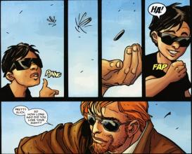

Daredevil (Сорвиголова)
Ранние годы
Жизнь Сорвиголовы всегда состояла как из радости, так и из несчастий. История Мэтта Мердока началась с его отца. «Джек-боец» Мердок растил сына в одиночку: по его утверждению, мать мальчика давно скончалась. Джек хотел, чтобы его сын стал более успешным, чем он сам. Он заставлял Мэтта постоянно учиться и не позволял играть в спортивные игры с другими детьми. Мердок-старший надеялся, что его сын станет врачом или адвокатом, а не таким же «неотёсанным бревном», как он. Другие дети насмехались над тихоней Мэттом, считая его трусом, и выдумали ему издевательское прозвище «Сорвиголова». Мэтт давал выход своим расстройствам, тайком тренируясь в спортзале своего отца-боксёра.
Однажды Мэтт шёл по улице, и увидел, как слепой человек вышел на проезжую часть, и его вот-вот собьёт грузовик. Мэтт успел оттолкнуть этого человека, но грузовик разбился, и радиоактивная жидкость, которую он перевозил, выплеснулась, попав Мэтту на лицо и ослепив его. Однако позднее, находясь в больнице, Мэтт обнаружил, что его обоняние, осязание, вкус и слух обострились до сверхчеловеческого уровня. Кроме того, у него развилось особое «радарное зрение», позволявшее чувствовать окружающее его пространство в мельчайших подробностях. Однажды в больнице его навестила некая монахиня, носившая золотой крест. Только много лет спустя Мэтт узнал, что это была его мать, которая вовсе не была мертва.
Спустя несколько лет Мэтт повстречал слепого воина-ниндзя по имени Стик (Stick). Стик научил Мердока полноценно использовать сверхчеловеческие возможности его организма, а также натренировал его, сделав Мэтта мастером самых разных боевых искусств. Мэтт не оставлял и учёбу: он поступил на юридический факультет Колумбийского Университета. Там он повстречал девушку по имени Электра Начиос (Elektra Natchios), и вскоре молодые люди полюбили друг друга. Но когда отец Электры был случайно убит полицейскими, она отстранилась от всего мира, включая, увы, и Мэтта.
Тем временем карьера Джека Мердока пошла под откос. В отчаянии он начал пользоваться услугами нечестного промоутера, известного как Фиксер (The Fixer). Вскоре он выиграл несколько боёв подряд, но оказалось, что его противники проигрывали только потому, что им платил за это Фиксер. А затем Фиксер объявил, что следующий бой «Джек-боец» должен проиграть. Однако посмотреть на этот бой пришёл Мэтт. Джек не мог проиграть в присутствии сына, и впервые за долгое время он выиграл бой исключительно благодаря собственным силам, навыкам и упорству. Однако Фиксер не простил ему эту победу. Тем же вечером его люди застрелили «Джека-бойца».
Осиротевший Мэтт вскоре закончил своё обучение в университете и вместе со своим другом Франклином «Фогги» Нельсоном (Franklin “Foggy” Nelson) открыл адвокатскую контору «Нельсон и Мердок». Вскоре Фогги нанял секретаря — молодую и красивую девушку по имени Карен Пейдж (Karen Page). Карен сразу же заинтересовалась Мэттом, и ей было очень жаль, что такой чудесный и привлекательный мужчина был слепым. Возможно, эта жалость стала причиной ещё большего влечения Карен к Мэтту. Мердоку девушка тоже нравилась, а Фогги и вовсе считал, что влюбился в неё. Контора «Нельсон и Мердок» была небольшой, но весьма успешной: уже на раннем этапе её работы клиентами молодых адвокатов стала знаменитая Фантастическая Четвёрка (Fantastic Four), которой нужно было оформить патенты на изобретения Рида Ричардса (Reed Richards).
Об убийцах, лишивших его отца, Мэтт не забывал ни на секунду. Он сшил себё чёрно-жёлтый костюм из старой боксёрской одежды «Джека-бойца», разыскал банду Фиксера, а затем и её лидера. Напуганный Фиксер убегал от Мердока до тех пор, пока не умер от инфаркта. Месть за убийство отца свершилась, но Мэтт решил продолжать бороться с преступностью, называя себя Сорвиголовой — Человеком без Страха.
Сорвиголова
Хотя некоторые из его ранних врагов были довольно смешными, как например Стилтмэн (Stilt Man), Матадор (Matador) или Лягушатник (Leap Frog), Сорвиголова повстречал и гораздо более опасных противников. Первым полноценным суперзлодеем, с которым он столкнулся, был враг Человека-Паука по имени Электро. Чуть позже ему пришлось противостоять Фиолетовому Человеку (Purple Man) — иностранному шпиону, который случайно был облит загадочными химическими веществами и приобрёл фиолетовую кожу и способность контролировать умы людей. К счастью, эта способность была не слишком эффективна против Сорвиголовы, так как она хорошо действовала только на тех, кто видел Фиолетового Человека. Ещё одним опасным врагом Человека без Страха стал суперзлодей по имени Мистер Страх (Mr Fear). Он был куратором музея восковых фигур и мечтал оживить свои экспонаты. Но вместо этого он случайно изобрёл газ, который вызывал у людей беспричинный страх и панику. Этим газом он и пользовался, совершая свои дерзкие преступления.
Затем последовал период, когда Мэтт встречался, а иногда и сражался с такими сильными противниками, как Нэмор (Namor). Он всё меньше сражался с обычными уличными преступниками, уделяя внимание в первую очередь серьёзным суперзлодеям. Также Сорвиголова несколько раз демонстрировал удивительную способность сбегать откуда угодно, выбираясь, подобно Гарри Гудини, из самых опасных и смертоносных ловушек. В этот же период Мэтт познакомился с одним из своих ценнейших союзников — Человеком-Пауком (Spider-Man). Первая их встреча была досадным недоразумением: Паук пытался выяснить, кто скрывается под рогатой маской. Он проследил за Сорвиголовой с помощью Паучьего Чутья и обнаружил, как он скрылся в конторе «Нельсон и Мердок». Человек-Паук решил, что костюм Сорвиголовы носит Фогги Нельсон, ведь ему не пришло в голову, что слепой Мэтт может быть супергероем. Чуть позже герои вместе победили суперзлодея по имени Мародёр в Маске (Masked Marauder) и нескольких других злодеев, помогавших ему.
В дальнейшем Сорвиголова стал активно применять не только свои боевые и акробатические навыки, но и радарное зрение и блестящий интеллект, что позволило ему стать непревзойдённым детективом.
Сан-Франциско
Мэтт переехал в Сан-Франциско, где продолжал бороться с преступностью в качестве Сорвиголовы и работал адвокатом (теперь в другой фирме). Позднее Мердок узнал, что его новые работодатели заинтересованы в первую очередь в своей карьере, а не в справедливости судебных решений, и он покинул эту организацию.
Вскоре он повстречал прекрасную русскую девушку Наташу Романову, которая затем оказалась супергероиней Чёрной Вдовой. Тогда Мэтт начал превращаться в бабника: хотя у него уже был роман с Карен Пейдж, он начал встречаться с множеством других девушек, включая и Чёрную Вдову. Из-за этого произошёл весьма неприятный эпизод, когда Сорвиголова сражался с бывшим парнем Наташи — Соколиным Глазом (Hawkeye).
Вместе с Чёрной Вдовой Мэтт одолел множество злодеев. Самым заметным из их совместных подвигов была победа над Тёмным Мессией (Dark Messiah). Партнёры расстались на короткое время, когда Мердок вернулся в Адскую Кухню, но вскоре Вдова переехала в Нью-Йорк, и они снова начали действовать вместе.
Некоторое время спустя Сорвиголова столкнулся с человеком, который стал его самым главным врагом. Этот безжалостный психопат-убийца причинил Мэтту великое множество страданий. Долгое время его настоящее имя оставалось неизвестным, а Сорвиголове он был известен только как Меченый (Bullseye). Несколько раз подряд он побеждал Человека без Страха. Мэтту впервые удалось справиться с ним, когда в опасности оказалась Чёрная Вдова. Но это было только начало их многолетнего противостояния. Со временем Меченый стал одержим Сорвиголовой и сражениями с ним. Он совершал дерзкие и жестокие преступления, только чтобы привлечь внимание Мердока.
Однажды суперзлодей Шут (Jester) раскрыл тайну личности Мэтта и публично объявил, что слепой адвокат был Сорвиголовой. Тогда Мердок притворился, что уехал из города, а на самом деле он изменил внешность и стал называть себя Майком Мердоком, утверждая, что он — брат Мэтта. Карен волновалась о Мэтте, но в то же время увлеклась Майком. Позднее Мердок инсценировал смерть Майка, после чего на некоторое время прервал свою деятельность супергероя. Увидев, что после смерти Майка Сорвиголова перестал появляться, все окончательно поверили, что костюм носил именно Майкл Мердок. Тогда Мэтт снова начал действовать в качестве защитника Адской Кухни, но его больше никто не подозревал, так как все думали, что после смерти Майка его заменил кто-то другой.
Электра
Мэтт вновь столкнулся с Электрой при чрезвычайно неприятных обстоятельствах. Оказывается, после окончания колледжа она стала наёмной убийцей и связалась с одной из опаснейших преступных группировок под названием Рука (Hand). Позднее она оставила эту организацию, но по-прежнему была холодной и жестокой. Тем временем основным источником угрозы для Мердока стал Кингпин (Kingpin). Король криминального мира нанял Меченого на постоянную службу, и маньяк несколько раз пытался убить Сорвиголову. Но после новой череды неудач он понял, что так он не справится с Человеком без Страха. Тогда Меченый надел костюм Сорвиголовы и начал на виду у всех убивать людей. Вскоре разъярённая толпа избила до полусмерти настоящего Мердока. Меченый и Электра объединились, чтобы покончить с ним, но когда девушка узнала, что Сорвиголова — это её возлюбленный, Мэтт, она поняла, что Меченый обманул её и Сорвиголова не был преступником. Устав от безуспешных попыток Меченого расправиться с Сорвиголовой, Кингпин сам вступил с ним в бой и победил защитника Адской Кухни с помощью своих навыков, однако убить его так и не смог.
Хотя Сорвиголова и Электра теперь были союзниками и даже вместе одолели одного из врагов Мэтта, Гладиатора (Gladiator), позднее Электра вернулась на преступный путь и стала главной наёмницей, работавшей на Кингпина. Узнав об этом, находившийся в тюрьме Меченый пришёл в ярость и сбежал. Не желая видеть, как другой человек выполняет его работу, он разыскал Электру и напал на неё. После продолжительного боя Меченый смертельно ранил Электру её собственным кинжалом саи. Она потратила последние силы, чтобы доползти до дома Мэтта, где и умерла у него на руках.
Из-за своей безумной любви к Электре Мэтт едва не лишился рассудка. Он стал чрезмерно агрессивным в боях с врагами и подвергался вспышкам гнева и депрессии в повседневной жизни. Тем временем Меченому удалось узнать о том, как Мэтт Мердок потерял зрение. Он заподозрил, что слепой адвокат и есть Сорвиголова. К счастью, Мердок смог одурачить Меченого, и тот решил, что ошибся в своих подозрениях. Вскоре Сорвиголова и Меченый сошлись в поединке на крыше одного из зданий в Адской Кухне. Их бой продолжался около двенадцати часов, и ни один из них не собирался отступать. Меченого поддерживала его одержимость убийством Сорвиголовы, а Мэтт хотел отомстить за Электру. В конце концов Мердок сбросил противника с довольно большой высоты, и при падении Меченый сломал позвоночник, в результате чего его парализовало.
Хизер Гленн (Heather Glenn), бывшая невеста Мэтта, вернулась в его жизнь. Вскоре Мердок снова сделал ей предложение. Когда девушка отказала, Мэтт провёл расследование и выяснил, что принадлежавшая ей компания участвовала в незаконных сделках. Тогда он начал шантажировать Хизер, угрожая разрушить её бизнес. К счастью, Фогги Нельсону удалось убедить друга, что он поступает неправильно. Спустя несколько лет Хизер спилась и обратилась к Мэтту за помощью. Он проигнорировал эту просьбу, и спустя несколько дней Хизер повесилась.
Мердок понимал, что смерть Электры необходимо как-то пережить. Однако Рука не хотела оставлять девушку в покое даже после смерти. Ниндзя похитили тело Электры, чтобы оживить её в качестве безжалостной и верной только им убийцы. Чтобы не допустить этого, Мэтт обратился за помощью к своему учителю Стику и его клану под названием «Чистые» (Chaste), который уже давно противостоял Руке. Чистые видели в Мэтте только ненадёжного и недисциплинированного дикого пса, но Стик верил в своего ученика и согласился ему помочь. Позднее Мэтт был принят в ряды Чистых и продолжил своё обучение у Стика и его друга Стоуна (Stone). Он научился различным исцеляющим техникам, использующим Чи или жизненную силу.
Наступил момент, когда Сорвиголова, Чёрная Вдова, Стик и все Чистые объединились, чтобы сразиться с воинами Руки. Бой был выигран ценой жизни почти всех Чистых, включая, увы, и Стика. Сорвиголова продолжил обучаться у Стоуна, и вскоре он даже смог развить телепатические способности, позволявшие ему на расстоянии разговаривать с людьми, также владеющими телепатией. Несколько раз он пытался вернуть к жизни Электру. Хотя эти попытки казались напрасными, позднее именно благодаря им Стоун смог спасти её.
Возвращение Сорвиголовы
Покинув Стоуна, Мэтт вернулся в Нью-Йорк. Электра была мертва, и в жизнь Мердока вернулась Чёрная Вдова. Самого героя больше влекло к Карен Пейдж, но её больше привлекал Сорвиголова, а не Мэтт Мердок.
Когда отец Карен сфабриковал собственную смерть, а затем объявился в качестве суперзлодея Голова Смерти (Death's Head), девушка решила провести расследование, а Сорвиголова присматривал за ней. Это привело к сражению между Мердоком и Головой Смерти. Злодей уже собирался убить Человека без Страха, но увидел, что его дочь в опасности и пожертвовал собой, чтобы спасти и её, и Сорвиголову. Вскоре после этого случая Мэтт раскрыл Карен тайну своей личности. На время у них сложились устойчивые отношения, но Карен не могла терпеть двойную жизнь своего возлюбленного, и она уехала в Калифорнию, чтобы стать актрисой.
Новое рождение
Поездка Карен в Голливуд окончилась страшной неудачей. Девушка так и не смогла стать актрисой, и вскоре она настолько опустилась, что начала работать в качестве порнозвезды и пристрастилась к наркотикам. Находясь в отчаянном положении, она продала тайну личности Мэтта, чтобы купить героин. Кингпин не стал публично разглашать секрет Сорвиголовы, но воспользовался этой информацией и своими обширными связями, чтобы сделать жизнь Мердока невыносимой. Верные ему люди заморозили банковские счета конторы «Нельсон и Мердок», и вскоре кредиторы лишили Мэтта дома. Затем из-за манипуляций Кингпина лейтенант полиции Николас Манолис (Nicholas Manolis) обвинил Мердока в коррупции: по утверждению Манолиса Мэтт подкупал свидетелей, чтобы выигрывать в суде. Это обвинение серьёзно запятнало репутацию слепого адвоката. Мэтту удалось избежать тюремного заключения, но он был отстранён от юридической практики. Не зная, что в его бедах был виноват Кингпин, Мэтт заподозрил, что против него сговорились его друзья — Фогги Нельсон и Глорианна О'Брин (Glorianna O'Breen) и что они хотели присвоить себе контору. Ещё один близкий друг Мэтта, репортёр газеты «Дейли Бьюгл» (Daily Bugle) Бен Урих (Ben Urich) решил провести расследование и вскоре выяснил, что за всем этим стоял Кингпин. Однако Фиск подослал наёмника, который убил человека, снабжавшего Бена информацией, а затем запугал самого репортёра и вынудил его молчать.
Тогда Мэтт решил сам напасть на Кингпина и заставить его восстановить свою жизнь. По дороге он столкнулся с несколькими бандитами и полицейским, пытавшимися поймать его, и отобрал у полицейского дубинку для борьбы с Фиском. Однако Сорвиголова проиграл бой, так как уже несколько недель находился в тяжелейшем физическом и психическом состоянии и даже иногда начинал бредить. Когда Мердок очнулся, он обнаружил себя привязанным к такси, владелец которого был избит до смерти той самой дубинкой, что Сорвиголова взял у полицейского. Прежде чем Мэтт смог что-либо предпринять, машину столкнули в реку. Кингпин объявил своим приспешникам, что убил единственного по-настоящему достойного и честного человека, которого когда-либо знал.
На самом деле Человек без Страха выжил. Он сумел выбраться из машины и бесцельно бродил по улицам Адской Кухни, пока не наткнулся на шайку грабителей. Он был не в силах сражаться, и один из бандитов ранил его ножом, а затем Мэтта сбила машина. Истекающий кровью Сорвиголова сумел добраться до ближайшей церкви, где потерял сознание на руках у монахини. Эта монахиня оказалась его матерью, Мэгги Мердок, которая не видела его с тех пор, как навещала маленького, недавно ослепшего Мэтта в больнице. Мэгги смогла вылечить его и вернуть ему здравый рассудок.
Тем временем в Нью-Йорк вернулась Карен. Дела у неё шли ещё хуже, чем раньше: теперь её преследовал жестокий наркоторговец и наёмники Кингпина, которым было поручено убить всех, кто знал тайну личности Сорвиголовы. Не найдя Мэтта, она пришла к Фогги, и тот позволил ей спрятаться у него дома. Между тем Бен Урих всё же набрался мужества и рассказал редакции «Бьюгл» о том, как Уилсон Фиск подставил Мэтта Мердока.
Узнав, что Сорвиголова выжил, Кингпин пришёл в ярость и немедленно организовал его поиски. Кроме того, он нанял бывшего пациента психиатрической лечебницы, чтобы тот надел костюм Сорвиголовы и убил Нельсона и Пейдж. Бена Уриха должна была убить та же медсестра, что расправилась до этого с его информатором. К счастью, восстановивший силы Мэтт смог защитить своих друзей. При этом он надел костюм Сорвиголовы (впервые с тех пор, как снесли его дом). Тогда Кингпин задействовал свои связи с военными и отправил суперсолдата по имени Ньюк (Nuke) на особое задание. Ньюк начал убивать невинных горожан, чтобы привлечь внимание Сорвиголовы и затем убить его. Но, похоже, он перестарался, так как привлёк внимание не только Мердока, но и целой команды Мстителей (Avengers), которая, конечно же, с лёгкостью его победила. Капитан Америка (Captain America) был сильно недоволен тем, что Ньюка приняли в новую программу «Суперсолдат». Позднее Ньюк выбрался из-под стражи и напал на редакцию «Дейли Бьюгл», но был убит военными. Сорвиголова использовал полученную информацию о Ньюке как доказательство того, что Кингпин имеет влияние на армейских чиновников.
В конце концов Мэтт воссоединился с Карен и объявил, что намерен следовать такому пути, который предложит ему жизнь, даже если это будет означать потерю преимуществ успешного адвоката.
Пришествие Тифозной Мэри
Хотя теперь Мэтт встречался только с Карен, другие женщины его по-прежнему влекли. Однажды его соблазнила молодая и невинная девушка по имени Мэри Уолкер (Mary Walker), после чего у них начался роман. Когда Карен узнала об этом, она порвала с Мердоком, который не знал, что Мэри страдала от серьёзного психического расстройства — расщепления личности. Её вторая личность, Тифозная Мэри (Typhoid Mary), была безжалостной наёмницей, которой Кингпин приказал убить Сорвиголову. Она оказалась чрезвычайно опасным противником, успешно комбинировавшим свои телепатические и пирокинетические способности с впечатляющими навыками рукопашного боя. Даже после нескольких сражений с героем она смогла сохранить свою личность в тайне, мастерски меняя не только свой характер, но и внешность, поведение, голос и даже запах, что позволяло ей обмануть обострённые чувства Мэтта. Хотя в одном из боёв с ней Сорвиголова серьёзно пострадал, он всё же смог защитить Адскую Кухню и не позволить ей погрузиться в хаос, когда в Нью-Йорке происходило сражение преследуемых «Актом о Регистрации Мутантов» Людей Икс (X-Men) с Апокалипсисом (Apocalypse) и его Всадниками.
Вскоре Тифозная Мэри прибегла к помощи нескольких злодеев, включая, например, Бушвокера (Bushwacker), чтобы устроить масштабную охоту за Сорвиголовой. В итоге она выстрелила в него в упор, а затем сбросила с моста. Сорвиголову опять сочли погибшим, и Человек-Факел объявил, что будет патрулировать Адскую Кухню. Вскоре Сорвиголова всё же вернулся. Неизвестно, каким образом он выжил (некоторые факты намекают на причастность Мефисто (Mephisto) и Блэкхарта (Blackhearth) к его смерти и возвращению), но он определённо использовал астральные техники Стика, чтобы вылечиться после ранений.
Джек Мердок - Сорвиголова
орвиголова снова стал охранять Адскую Кухню. Он проникал в подпольные организации и противостоял таким злодеям, как Калипсо (Calypso), Главврач (Surgeon General), Надгробие (Tombstone), а также опасным преступникам, присоединившимся к Руке. Также он несколько раз сталкивался с Карателем (Punisher) и боролся с его настойчивыми попытками убивать бандитов. Наступил такой период, когда Мэтту пригодились его боксёрские навыки: после тяжёлого поражения от злодеев он потерял память и некоторое время считал себя своим отцом Джеком Мердоком. Не пользуясь супергеройским костюмом и оборудованием, он продолжал наводить порядок на улицах Нью-Йорка. Вскоре у него завязался роман с девушкой по имени Нила Скин (Nyla Skin), которую он спас от грабителей, и она часто составляла ему компанию в борьбе с преступностью. Со временем память вернулась к Мэтту, и он опять стал вести свою обычную жизнь, но теперь он часто объединялся с другими супергероями.
Однажды Сорвиголова снова был серьёзно изранен в бою, и, чтобы избежать повторения чего-то подобного, он создал красно-чёрную броню с использованием особых полимеров и небольшого количества адамантия. Именно этот костюм он теперь носил в качестве основного. Когда пресса раскрыла тайну его личности, Мэтт сфабриковал собственную смерть и в обычной жизни стал называть себя Бэтлин Мердок (в честь прозвища своего отца Battlin' Murdock). Теперь у Мердока была новая жизнь как в образе обычного гражданина, так и в образе супергероя (все считали, что человек в броне — это Новый Сорвиголова, заменивший погибшего Мэтта). К сожалению, постоянная необходимость скрывать, кто он на самом деле, негативно отразилась на его психике. Суть этих изменений пока оставалась неясной. Тем временем произошло то, чего Мэтт ждал долгое время: Стоуну удалось вернуть Электру к жизни.
Когда Карен узнала о мнимой смерти Мэтта, её вновь начали преследовать призраки прошлого — люди, с которыми она имела дело, когда была наркоманкой. Благодаря помощи Капитана Америки и Гамбита ей удалось не вернуться к этому образу жизни. Вскоре она заподозрила, что Бэтлин Мердок и Новый Сорвиголова как-то связаны с Мэттом. Вместе с Фогги Нельсоном они проникли в дом Бэтлина, где обнаружили живого и здорового Мэтта, который как раз переодевался в костюм Сорвиголовы. Так Фогги узнал, что долгие годы его лучший друг носил маску Человека без Страха. Фогги был сильно обижен тем, что Мэтт не раскрыл ему свой секрет, но им всё же удалось сохранить свою дружбу. С помощью Карен и Фогги Мэтт снова убедил весь мир, что он — всего лишь слепой человек, который никак не может быть грозным защитником Адской Кухни. Он вновь стал носить свой традиционный красный костюм, а вскоре пришёл в церковь к своей матери и на исповеди рассказал о стриптизёрше-проститутке, которую он убил несколько лет назад. Мэгги отпустила сыну его грехи, но он всё ещё чувствовал вину и даже пытался покончить жизнь самоубийством, передумав только в последний момент.
У Мэтта стали возникать видения, в которых ему являлся Стик, который пытался избавить его от мучительного чувства вины. Вскоре с ним связались Чистые, но Мердок не желал слушать их наставления и в одиночку без особого труда победил их всех в бою. Со временем Стику всё же удалось восстановить хрупкую психику своего подопечного. Остаётся неизвестным, был ли это настоящий Стик, связавшийся с Сорвиголовой из загробного мира, или всего лишь плод разыгравшегося воображения Мэтта.
Древо Познания
В тот период, когда Мэтт выступал в качестве Нового Сорвиголовы, он пытался разыскать Ноубота (Knowbot) — вышедшую из-под контроля технологию, которая взламывала правительственные компьютеры. Капитан Америка также проводил своё расследование, и вскоре он познакомился с «наследником Сорвиголовы». Когда Ноубот полностью загрузил в себя файлы правительства, его хранитель, Килобайт (Kilobyte), разрушил часть его приспособлений, и герои не смогли отследить местонахождение Ноубота. Оставаясь незамеченной, за этими событиями следила девушка-хакер, известная как Синклер Спектр (Sinclair Spectrum). Вскоре на арену вышел Барон фон Штрукер (Baron Von Strucker) и его организация Гидра, а также недавно появившийся, но быстро развивающийся синдикат, специализирующийся на преступлениях в интернете — Сбой Системы (System Crash). Тем временем Электра попыталась вступить в ряды Чистых, но её кандидатура была отвергнута, так как она не проявила должного уважения к тем силам, благодаря которым вернулась к жизни.
Злодей Битмэп (Bitmap) из Сбоя Системы убил хакера по прозвищу Кобол (Cobol), с которым познакомился Сорвиголова во время поисков Ноубота. В самый разгар совместного расследования Сорвиголовы и Капитана Америки Мердок узнал, что Карен возобновила контакты с продюссерами порнофильмов. Она всё же отказалась от участия в их новом проекте, но этот случай наложил неприятный отпечаток на их и без того не безоблачные отношения с Мэттом. Вскоре Электра тоже попыталась восстановить роман с Человеком без Страха, но тот остался верен Карен.
Сорвиголова и Капитан Америка выследили Синклер Спектр и попытались допросить её, но девушка категорически отказалась сообщать им какую-либо информацию. Мердок понял, что расспросы бесполезны, и оставил Синклер, но Роджерс и прокурор Кэти Мэлпер (Kathy Malper) продолжили пытаться узнать что-нибудь ценное. Тем временем Сорвиголова нанёс визит Фогги Нельсону, от которого узнал, что сетевые террористы захватили Эмпайр Стейт Билдинг. Вместе с Серебристым Соболем (Silver Sable) и её Дикой Бандой (Wild Pack) он освободил небоскрёб. Затем Мэтт начал охоту за ещё одним участником Сбоя Системы — Вайрхэдом (Wirehead). Несмотря на то, что злодею удалось скрыться, Сорвиголова сильно продвинулся в своём расследовании: теперь он знал, что компьютерные преступления совершались одной и той же организацией.
Железному Кулаку (Iron Fist) пришлось вмешаться во все эти события, когда война с компьютерными террористами затронула принадлежащую ему фирму. Суперзлодеи Стальной Воротник (Steel Collar) и Техно-Шип (Techno-Spike) похитили все файлы Ноубота и сбежали. К счастью, они оставили улику — лист редкого азиатского растения. Тем временем Мстители и Фантастическая Четвёрка создали совместный руководящий орган, который координировал их действия в охоте за террористами. В очередной схватке со Сбоем Системы Сорвиголова объединился с Гамбитом, и тот обеспечил его новыми ценнейшими сведениями об укрытии преступников. Пока супергерои противостояли Сбою Системы, Карен Пейдж вновь встретилась со своими бывшими продюссерами, которые в очередной раз предложили ей сняться в их новом фильме и показали запись одного из своих недавних проектов. Посмотрев видео, в котором было показано, как насилуют какую-то девушку, Карен с отвращением отказалась сниматься в чём-то подобном.
В это время выяснилось, что файлы, украденные Ноуботом были нужны Штрукеру и Гидре для создания неразрушимого кода, с помощью которого они смогли бы распространять и получать в интернете любую информацию, и никто не смог бы им помешать. Это помогло бы им координровать теракты с немыслимой эффективностью. Когда Кэп и Сорвиголова узнали о планах злодеев, они вступили в бой с Гидрой и Сбоем Системы, но были побеждены. Капитана взяли в плен, а израненного Мердока оставили умирать. Однако Человек без Страха оправился от травм, Капитан Америка сбежал, и вместе они положили конец зловещим планам террористов. Прежде чем уничтожить их оборудование, Сорвиголова воспользовался возможностями этих технологий и стёр из правительственной базы данных информацию о преступном прошлом Синклер Спектр, чтобы девушка могла жить нормальной жизнью. После этого он хотел оставить супергеройскую деятельность, но Электра убедила его, что присутствие Сорвиголовы чрезвычайно важно для безопасности Адской Кухни.
Дружелюбный сосед Сорвиголова
Когда Мэтт вернулся к привычному образу и красному костюму, он стал вести себя менее скованно (очевидно, мрачный стиль уже был для него невыносим). Он продолжил расследовать преступления «уличного уровня» и помогать людям. При этом он редко проявлял гнев, зато часто шутил и старался казаться легкомысленным. После долгого перерыва в адвокатской деятельности он вновь решил вернуться на это поприще. Вместе с Фогги Нельсоном он устроился на фирму Розалинды Шарп (матери Фогги), и старые друзья быстро восстановили свою репутацию превосходных адвокатов. Среди прочих преступников Сорвиголове пришлось сражаться с Бушвокером — одним из врагов Карателя. Кроме того, Кингпин вновь начал строить свои козни. Человек без Страха также столкнулся с Мистерио (Mysterio), которого он легко победил. Но, пожалуй, самым грандиозным боем Сорвиголовы за этот период была его схватка с Поглотителем (Absorbing Man). Именно тогда Мэтт впервые продемонстрировал свою удивительную способность использовать радарное зрение, чтобы находить уязвимые места в структуре предметов и аномалий.
Искупление
В Адской Кухне было найдено изуродованное тело мальчика по имени Брэдли, и в убийстве обвинили некоего Джоэля Флада (Joel Flood) — любителя готической культуры, который якобы убил Брэдли, исполняя какой-то сатанинский ритуал. Полиция сразу же схватила Джоэля и нескольких его друзей, постоянно демонстрируя неприязнь к их образу жизни. Мать обвиняемого, Эмили Флад, обратилась к Мэтту с просьбой доказать невиновность её сына, так как она уверена, что Джоэль не убивал Брэдли. Вернувшись домой, она обнаружила, что квартира разгромлена возмущёнными соседями, которые тоже ненавидели «сектанта».
Мэтт выяснил, что у Джоэля было алиби — он ухаживал за своим больным родственником, Амосом (Amos Flood), который, судя по всему долгое время портил жизнь всей семье, но в конце концов у самого Амоса не выдержали нервы. Во время визита к Фладам Мэтт остановил какого-то человека, избивавшего своего сына Дэйви, и понял, что попал в район, населённый весьма агрессивными людьми. Эта гипотеза подтвердилась, когда Мэтт встретился с отцом убитого Брэдли, Говардом Гидеоном (Howard Gideon). Как рассказала слепому адвокату жена Говарда, Карла Фей (Karla Faye), Говард тоже регулярно бил своего сына. Естественно, это откровение вызвало недовольство главы семейства, и как только Мердок ушёл, он набросился на жену, чтобы избить и её. К счастью, Карлу спас Мэтт, вернувшийся в образе Сорвиголовы.
В дальнейшем Гидеон серьёзно осложнял расследование своими попытками доказать, что Джоэль Флад всё-таки виновен. Тогда Мэтт заподозрил, что убийство совершил сам Говард. Он изучил следы укусов на теле убитого мальчика и хотел сверить их со слепками зубов Говарда, но тот уничтожил слепки и нагло обвинил в порче улик Сорвиголову. Затем он настроил целую толпу против Мердока и Флада. Тем не менее, Мэтту удалось выяснить, что Гидеон дейсвительно убил собственного сына, когда тот застал его за распространением наркотиков.
Ниндзя
В какой-то момент своей карьеры Сорвиголова решил отказаться от своих связей с ниндзя. Вскоре он проснулся рано утром, услышав, как кто-то пытается украсть хранящиеся у него вещи Стика. Мэтт сразу же начал преследовать злоумышленников, и в конце концов выяснил, что их отправил никто иной как Стоун, причём одним из похитителей был его главный помощник, Тран (Trahn). Мэтт догнал двух ниндзя, сразился с ними и вернул вещи, после чего стал хранить их неподалёку от своей кровати. Тем не менее, вскоре их снова похитили — на этот раз вместе с Мэттом, который проснулся и обнаружил, что находится в Японии. На этот раз ниндзя притащили Мэтта к Стоуну по собственной инициативе — Чистым нужна была помощь в новой битве с Рукой. Однако когда Чистые предложили Стоуну воспользоваться помощью Мердока, наставник не захотел просить своего ученика о помощи, зная, что тот откажется.
Дьявол-Хранитель
Однажды Мэтт спас молодую девушку от банды хулиганов. Скоро она пришла к нему и сказала, что знает тайну личности Человека без Страха. Кроме того, она рассказала Мэтту о своём видении, в котором ей открылось, что её дочь — спасительница мира, и оставила эту девочку Мэтту, чтобы тот её защищал. Затем она бесследно исчезла, оставив слепого адвоката в полном недоумении. Не зная, что делать с ребёнком, Мердок попросил Чёрную Вдову позаботиться о нём, а сам поспешил в офис, чтобы навести справки о таинственном младенце и не менее таинственной матери. Там он встретил человека по имени Николас Макейбрес (Nicholas Macabres), который утверждал, что этот ребёнок принесёт ужасные разрушения и страдания всей Земле, а затем ушёл, оставив Мэтту крестик, который он принимал за визитную карточку. Находясь в странном оцепенении, Мэтт вернулся домой и выбросил девочку из окна, но Чёрная Вдова вовремя успела её спасти и забрала её к себе.
Мэтт не понимал, что с ним происходит, но события не давали ему оправиться. Выяснилось, что ещё будучи порноактрисой, Карен заразилась СПИДом. К тому же Фогги Нельсона неожиданно обвинили в изнасиловании и убийстве женщины, с которой он встречался. Мать Фогги, Розалин Шарп, попросила Мэтта не браться за дело её сына, чтобы никто не мог упрекнуть адвоката в использовании служебного положения в личных целях. Разозлённый Мердок заявил, что увольняется из её фирмы, после чего вышел на улицу, чтобы успокоиться. Там он попытался остановить ограбление, но это была ловушка, и Сорвиголову быстро оглушили. Очнувшись, Мердок увидел человека с ужасающей внешностью, который начал ему что-то объяснять, но Мэтт только запутался ещё сильнее. Не желая его слушать, Сорвиголова убежал и оказался на середине проезжей части, где его чуть не сбил грузовик. Мэтта вовремя спасла Чёрная Вдова, которая по-прежнему присматривала за ребёнком. Неожиданно Мердок снова попытался убить девочку, но сумел остановиться.
Мэтт добрался до церкви, где потерял сознание. Человека без Страха нашла его мать, которая помогла ему справиться с очередным стрессом и забрала ребёнка под свою опеку. Позже Карен обратилась к своему возлюбленному с просьбой отдать младенца ей. Мэтт помнил, что не рассказывал Карен о девочке, и ему стало ясно, что девушка тоже находилась под влиянием Макейбреса. Таинственный человек убедил Карен, что ребёнок — причина её болезни и всех прочих страданий. Мэтт объяснил ей, что все её беды — это всего лишь следствие её собственных ошибок, которые она совершила в прошлом. Затем он обратился к Доктору Стрэнджу (Dr Strange), чтобы окончательно освободиться от влияния странного человека. Стрэндж выяснил, что Макейбрес пропитал крест, который он дал Мэтту, каким-то веществом, которое сделало Мердока более агрессивным и подавило способность размышлять логически. Вылечив Сорвиголову, Верховный Волшебник обратился к Мефисто, чтобы узнать, был ли ребёнок спасителем или угрозой. Демон ответил, что девочка не является ни тем, ни другим, а также сказал, что церковь сестры Мэгги подверглась нападению. Мэтт добрался до церкви так быстро, как только смог, и увидел, что Меченый уже убил многих монахинь, ранил Мэгги и собирается убить ребёнка.
Сорвиголова и Меченый сошлись в бою за жизнь девочки, а тем временем Карен осознала, что Мэтт нуждается в ней так же сильно, как и она в нём. Девушка пришла в церковь и попыталась помочь своему возлюбленному, но Меченый безжалостно убил её с помощью жезла-дубинки, который отобрал у Сорвиголовы. Пока Мэтт пытался помочь Карен, злодей сбежал, прихватив с собой ребёнка. Напоследок Карен смогла сказать Мэтту: «Я буду по тебе скучать». Так Мэтт Мердок потерял любовь всей своей жизни. Охваченный горем Человек без Страха даже подумывал о самоубийстве, но решил продолжать свою борьбу с несправедливостью. В кратчайшие сроки он вышел на след Макейбреса и разыскал его штаб, куда Меченый уже доставил девочку. Там Сорвиголова с удивлением обнаружил, что под личиной таинственного злодея скрывался Квентин Бек (Quentin Beck) – давний враг Человека-Паука, называющий себя Мистерио. Бек рассказал, что он умирает от неоперабельной опухоли головного мозга. У него оставались считанные месяцы, и он хотел умереть от рук достойного соперника.
Поскольку Мистерио не смог добраться до Человека-Паука, он решил, что позволит Сорвиголове убить себя. Чтобы страж Адской Кухни решился на столь нетипичный для него поступок, Бек сделал всё возможное, чтобы превратить его жизнь в невыносимый кошмар. Сначала он купил информацию о Сорвиголове у Кингпина и узнал тайну личности героя. Затем он притворился врачом Карен и отдал ей фальшивые результаты анализов, заставив девушку думать, что у неё ВИЧ. Несчастной матери маленькой девочки он с помощью своих иллюзий и гипноза внушил, что её дочь будет спасительницей человечества. Он также одурманил девушку Фогги Нельсона и убил её, сфабриковав улики против Фогги. Наконец он нанял Меченого, чтобы злодей убил Карен и похитил ребёнка. Однако даже этого оказалось недостаточно, чтобы заставить Сорвиголову переступить через свои принципы. Хотя Мэтт жестоко избил Мистерио, он отказался убивать его и высмеял весь план Бека. Обезумев от горя, Мистерио застрелился.
На похоронах Карен Мэтт был в состоянии такого стресса, что даже не мог выразить словами свою скорбь. К тому же он пребывал в растерянности: выяснилось, что Карен оставила ему в наследство крупную сумму денег, но поставила условие: Мэтт должен тратить эти деньги на свои нужды, а не отдавать на благотворительность. Позднее на мосту Джорджа Вашингтона Сорвиголова встретился с Человеком-Пауком. Паук постарался утешить своего старого друга, рассказав, что и его жизнь не является спокойной и безоблачной. Благодаря поддержке Человека-Паука Мердок решил продолжать свою деятельность супергероя. Он нашёл приёмных родителей для девочки и доказал невиновность Фогги Нельсона. Мэтт и Фогги придумали, куда им вложить оставленные Карен деньги: они вновь открыли адвокатскую контору «Нельсон и Мердок» и возобновили свою практику успешных юристов.
Части целого и игра на камеру
Кингпин, долгое время не доставлявший Сорвиголове хлопот, вновь решир разрушить жизнь героя. Он внушил девушке по имени Майя Лопез (Maya Lopez), что Человек без Страха убил её отца. Зная, что после смерти Карен Мэтт был одинок, Кингпин подстроил ему встречу с Майей, чтобы та обнаружила его слабости. Не зная об альтер-эго Мэтта, девушка быстро нашла с ним общий язык, хотя и была глухой. Майя даже влюбилась в Мердока и они начали встречаться. Однако в тайне от него Майя придумала себе прозвище «Эхо» (Echo) и стала охотиться за Сорвиголовой, используя свою удивительную фотографическую память, чтобы копировать его навыки. В одном из боёв с Эхо Мэтт узнал по запаху свою девушку, и раскрыл ей тайну своей личности. Хотя поначалу Майя была напугана, она быстро поняла, что Сорвиголова никак не мог быть убийцей её отца, ведь когда произошла эта трагедия, Мэтт ещё учился в начальной школе.
Настоящим убийцей оказался Кингпин. Разозлённая Эхо ворвалась в небоскрёб к королю мафии и вступила с ним в бой, в итоге временно ослепив Фиска. После этого она покинула США.
Враг общества
Один из подельников Кингпина, вышедший из-под его контроля, устроился на работу в ФБР и выдал федеральным агентам тайну личности Сорвиголовы. Однако агенты повели себя не так, как ожидал преступник: они поклялись никому не выдавать секрет Мэтта Мердока. К сожалению, среди них всё же нашёлся тот, кто не выполнил это обещание и продал информацию газете «Дэйли Глоуб» (Daily Globe). Теперь величайшая тайна Человека без Страха была раскрыта, и защитник Адской Кухни непрерывно подвергался гонениям со стороны прессы. Тем временем главный редактор «Дэйли Бьюгл», Джей Джона Джеймсон, собирался поручить своим репортёрам разыскать как можно больше информации о Мердоке. Однако репортёр Бен Урих заявил, что информация в «Глоуб» была ложной, а Мэтт не является Сорвиголовой. Его слова подтвердил фотограф Питер Паркер, который сказал, что знает настоящее имя Сорвиголовы, но не станет его называть, а только скажет, что это не Мэтт Мердок.
Тем временем на адвокатскую контору «Нельсон и Мердок» напал суперзлодей Мистер Хайд (Mr Hyde), которого Мэтт победил благодаря своевременной помощи Человека-Паука. Другие герои тоже не хотели оставлять Сорвиголову в беде: Ник Фьюри (Nick Fury) предложил ему работу в Щ.И.Т.е, а Капитан Америка придумал, как Мстители могли бы выручить Мердока, но тот отказывался от всех подобных предложений. Мэтт постоянно отрицал тот факт, что является Сорвиголовой, и подал в суд на «Дэйли Глоуб» (позднее дело было выиграно). В этот беспокойный период он встретил слепую женщину по имени Милла Донован (Milla Donovan). Они полюбили друг друга и в тайне поженились.
Кингпин начал разрабатывать новый коварный план против Человека без Страха, но этому плану не суждено было сбыться. Доведённый до отчаяния и безумно уставший противостоять Фиску Сорвиголова выследил его в одном из Нью-Йоркских баров и жестоко избил, после чего публично снял маску и объявил себя новым Кингпином Адской Кухни. Он угрожал расправиться с каждым, кто расскажет, что видел его без маски, несмотря на то, что маску только что снял сам (очевидно, он уже не мог мыслить здраво). Новый статус-кво Мэтта вызвал неудовольствие Человека-Паука, Люка Кейджа, Рида Ричардса и Доктора Стрэнджа, однако Сорвиголова не стал разговаривать с героями и сбежал. Вскоре он столкнулся с Карателем, который попытался обезвредить Человека без Страха, сказав что тот «пересёк черту». Мердок с лёгкостью одолел Карателя и снова скрылся.
Якудза попытались сделать свой ход и взять под контроль Адскую Кухню, уничтожив её нового Кингпина. Целая армия якудза, усиленная Гормоном Мутации (Mutant Growth Hormone) напала на Сорвиголову, и в бою он был ранен, что вынудило его скрываться до тех пор, пока он не восстановит здоровье. Беспокоясь о безопасности Мэтта, Милла связалась с Беном Урихом, который выследил Человека без Страха. Он сказал Мэтту, что его поведение последних недель — тайная свадьба с Миллой и захват титула Кингпина — всего лишь результат его внутреннего конфликта: Мэтт всё ещё не мог смириться со смертью Карен. Этот разговор прояснил разум Сорвиголовы, и он осознал, что не справится с Якудза в одиночку, без друзей. Он разыскал Люка Кейджа и извинился за свои грубые слова, после чего они решили организовать последнюю атаку на Якудза, чтобы раз и навсегда выгнать бандитов из города. Вскоре Сорвиголова вторгся на базу Якудзы вместе с Чудо-Рыцарями (Marvel Knights) — командой, включавшей в себя Человека-Паука, Люка Кейджа и Железного Кулака. Благодаря их совместным усилиям бандиты действительно покинули Нью-Йорк.
Гектор Айала (Hector Ayala), отошедший от дел супергерой Белый Тигр (White Tiger), решил вернуться к стезе искателя приключений, но был обвинён в убийстве, которого не совершал. Несмотря на попытки Мэтта защитить его, Гектору был вынесен обвинительный приговор, а затем Тигр был убит при попытке побега. Племянница Гектора, федеральный агент Анджела Дель Торо (Angela Del Torro) участвовала в расследовании, которое Мэтт проводил и как адвокат, и как супергерой. Вскоре она сообщила, что делала это по единственной причине: в наследство от дяди ей достался амулет Белого Тигра, и она не знала, что с ним делать. Она собиралась стать супергероем, но для начала хотела узнать, зачем вообще люди надевают костюмы и идут сражаться с другими людьми. Вместо ответа Мердок попросил её ждать его на крыше, а сам вскоре появился там в качестве Сорвиголовы и вступил с Анджелой в бой. Впечатлённый её боевыми навыками, он привёл девушку на одну из улиц Адской Кухни, где она предотвратила ограбление. Увидев благодарность мирных горожан, она окончательно решилась стать новой Белой Тигрицей. Вскоре она даже спасла Сорвиголову от бывшего криминального босса Александра Бонта (Alexander Bont) и его приспешника Гладиатора (Gladiator).
Попавший в тюрьму после недавней стычки с Сорвиголовой Кингпин предложил федеральным агентам неоспоримые свидетельства того, что Человеком без Страха всё же является Мэтт Мердок, в обмен на свободу. За этими бумагами сразу же началась охота, в которой принимали участие Меченый, Электра, Чёрная Вдова, Человек-Паук и другие герои, злодеи и представители властей. Пытаясь найти документы раньше всех, Меченый устроил жестокое и кровавое сражение с Электрой и Сорвиголовой прямо посреди городских улиц. Маньяк был повержен и заключён под стражу. Мало кто подозревал, что на самом деле никаких документов, в которых была бы раскрыта тайна личности Мэтта, не существовало, а Кингпин блефовал, чтобы манипулировать всеми и заманить Сорвиголову в ловушку, где его ранил в плечо Паладин (Paladin), работавший в то время на ФБР. Фиск знал, что герои доставят Мердока к Ночной Сестре (Night Nurse) — работнице одной из нью-йоркских больниц, которая лечила раненных супергероев в тайне от начальства. Оказав давление на Бена Уриха, Кингпин выяснил, где именно работает Ночная Сестра, а та тем временем поняла, что не сможет помочь Мэтту. Электра, ставшая к тому времени главой Руки, настояла на том, чтобы её подчинённые спасли Сорвиголову с помощью своих методов, что и было сделано, вопреки протестам Чёрной Вдовы.
Клинику окружили агенты ФБР, и завязалось сражение между супергероями, агентами и ниндзя Руки. В конце концов Мэтт остановил бой и был арестован. Кингпин надеялся, что теперь его отпустят, но федеральные агенты не хотели отпускать опаснейшего из криминальных боссов, поэтому они посадили их с Мэттом в одну тюрьму, надеясь, что вскоре один из них убьёт другого. Вскоре оказалось, что в этой же тюрьме содержались Меченый и Каратель. Когда Фогги Нельсон и частный детектив Дакота Норт (Dakota North) пришли навестить Мердока, на Фогги напала группа заключённых, а Мэтт не мог спасти своего друга, и ему оставалось лишь слушать, как от жестоких побоев нарушается, а затем и вовсе прекращается сердцебиение Фогги. Нельсона доставили в больницу, где была констатирована его смерть.
Когда Чёрный Тарантул (Black Tarantula) устроил бунт в тюрьме, Мэтт и Фиск были вынуждены объединить усилия, чтобы выжить во всеобщем хаосе. Однако когда Кингпин попытался освободить Меченого, Мердок сделал всё, чтобы ему помешать. Это привело к тому, что Меченый случайно ранил Кингпина в ногу, а Сорвиголова отправил короля мафии в нокаут. Затем вместе с Карателем Мэтт спас одного из надзирателей и сбежал. Пока Мэтт сидел в тюрьме, в Америке успела произойти Гражданская Война супергероев, во время которой был замечен самозванец-Сорвиголова, поддерживавший бунт Капитана Америки. Вернувшись на улицы Адской Кухни, Мэтт выследил своего подражателя. Им оказался Железный Кулак, который без ведома настоящего Сорвиголовы носил его костюм, пытаясь в очередной раз убедить общественность, что Мэтт Мердок не является Человеком без Страха.
На похоронах Фогги его мать, Розалина Шарп, обвинила в смерти сына Мердока. Вскоре после похорон Мэтт отправился в Европу, выслеживая тех, кто организовал нападение на Фогги в тюрьме. Расследование привело его к Ванессе Фиск (Vanessa Fisk) — жене Кингпина, которая была при смерти и считала, что причина всех её несчастий — вечная война его мужа против Сорвиголовы. Ванесса предложила Мэтту сделку: она воспользуется своим влиянием, чтобы избавить Мердока от всех обвинений, а тот, в свою очередь, применит свой талант адвоката, чтобы добиться освобождения Кингпина из тюрьмы. Мэтт не пошёл на такое соглашение и вернулся домой.
Уже в Нью-Йорке Мэтт узнал, что Ванесса всё же сдержала своё слово: агент ФБР, когда-то начавший разглашать тайну его личности, был убит, а с Мэтта сняли все обвинения, официально признав, что он не является Сорвиголовой (хотя и власти, и мирное население прекрасно понимали, что под маской всегда скрывался именно Мердок). Кроме того, обнаружилось, что Фогги Нельсон жив и здоров. Его смерть была сфальсифицирована, чтобы спрятать Фогги по программе защиты свидетелей. Из уважения к Ванессе Фиск, какой она была, прежде чем брак с Кингпином погубил в ней всё человеческое, Мэтт добился освобождения Кингпина, но проследил за тем, чтобы Фиска лишили американского гражданства и депортировали из страны. Наконец, Мердок вернулся к своей обычной жизни, воссоединившись с Фогги и Миллой. Адвокатская контора «Нельсон и Мердок» переехала в новый офис, а состав конторы пополнила талантливая юристка Бекки Блейк (Becky Blake).
Две стороны правосудия
Старый враг Сорвиголовы, Мелвин Поттер, более известный как Гладиатор, был обвинён в убийстве в психиатрической лечебнице, в которую он был помещён. Бекки хотела защищать его в суде, но Мэтт выступил против этой затеи, потому что он не хотел, чтобы их новая контора имела какие-либо дела с суперзлодеями. Однако вскоре Мэтт повстречал Поттера и узнал, что на самом деле он никого не убивал. Мердок решил добиться оправдания Гладиатора, но очень скоро тот совершил серию убийств, сбежал из лечебницы, надел свой костюм суперзлодея и устроил кровавую резню. Он даже собирался убить Миллу, но Сорвиголова вовремя остановил его, а также выяснил, что Гладиатор находится под чьим-то контролем. Оказалось, что Мистер Страх ввёл Мелвину особый наркотик, сделавший его абсолютно бесстрашным, вследствие чего Гладиатор и сошёл с ума.
Это было только начало зловещего плана Мистера Страха. Некоторое время спустя он отравил тем же самым наркотиком Миллу, и она была помещена в психиатрическую лечебницу. Сорвиголова выследил Мистера Страха и легко победил его — на самого Мэтта наркотик не действовал. Однако когда Сорвиголова потребовал дать ему противоядие, чтобы вылечить Миллу и Гладиатора, Мистер Страх ответил, что никакого противоядия не существует, а жизнь Миллы разрушена навсегда. Злодей сдался и был помещён в тюрьму на острове Райкер, но в уголовном мире заслужил впечатляющую репутацию.
Леди Меченая и Возвращение Короля
Незадолго до Тайного Вторжения Эхо убила Электру и выяснила, что на самом деле она была скруллом. После гибели Электры среди ниндзя Руки началась междоусобная борьба за лидерство. В их противостояние вмешалась новая суперзлодейка — Леди Меченая, которая взяла себе прозвище и стиль заклятого врага Сорвиголовы. Она стала самым перспективным кандидатом на пост лидера Руки, но сначала ей предстояло выдержать испытание — убить Мэтта Мердока. Однако Маки Мацумото (Maki Matsumoto — так звали её на самом деле) начала не с этого.
Через некоторое время после того, как Милла была госпитализирована, Мэтт совершил весьма противоречивый поступок, который был сам не в силах объяснить и которого он очень стыдился: он изменил своей жене с Дакотой Норт. В ту ночь, когда это произошло, Леди Меченая убила двоих людей и сфабриковала улики против Сорвиголовы. Чтобы обеспечить Мэтту алиби, Дакота была вынуждена рассказать о ночи, которую они провели вместе. Очень быстро об этом узнали родители Миллы, у которых с Мэттом была тяжба за право на опеку над девушкой, и в тайне от Мэтта перевезли дочь в другую клинику. В этот период Мэтт нашёл поддержку в лице Мастера Изо (Master Izo) — воина, который сотни лет назад верно служил Руке, но когда эта организация погрязла в насилии и преступлениях, покинул её и основал другой известный Мэтту орден - «Чистые». Однако скоро многие соратники Сорвиголовы, включая Белую Тигрицу и Чёрного Тарантула были убиты ниндзя Руки, а затем возвращены к жизни в качестве её адептов. Как позже выяснилось, таким образом Леди Меченая хотела лишить Мэтта всех, кто был ему дорог, чтобы ему было нечего терять и он согласился стать лидером Руки.
После того, как Кингпина выслали из страны, он поселился в Испании, где подружился с одной женщиной и её детьми. Фиск часто приходил к ним в гости, и они всегда были рады его видеть. Однако однажды, прийдя к ним в очередной раз, Уилсон увидел, что и мать, и дети убиты. Он понял, что за этим может стоять только Рука, и немедленно вернулся в Америку, чтобы начать войну с ниндзя. Кингпин и Сорвиголова решили объединить усилия, чтобы покончить с Рукой, которая завоевала слишком большое влияние в городе. Фогги Нельсон заметил странное поведение Мердока, а узнав, что он согласился работать вместе с Кингпином, Фогги уволил его из юридической фирмы.
Кингпин, Леди Меченая и криминальный босс по кличке Филин (Owl) в тайне ото всех собрались и заключили сделку, согласно которой новым лидером Руки станет Фиск. Когда Кингпин и Филин убили действовавшего на тот момент лидера (который и стоял за убийством подруги Уилсона), на месте происшествия появился Сорвиголова и напал на преступников. Он парализовал Филина, ударив его в позвоночник катаной, и нокаутировал Леди Меченую. Понимая, что Кингпину не должна достаться власть над Рукой, он предложил свою кандидатуру на пост нового лидера. Его жена лежала в больнице (а её родители скрывали от Мэтта, в какой), его лучший друг выгнал его из конторы, а большинство друзей-супергероев перешли на сторону ниндзя. Ничто не удерживало Мэтта в прежней жизни, и он готов был начать новую.
Так Мэтт стал главарём преступной организации, не подозревая, что всё это было подстроено Леди Меченой. Впрочем, Мацумото напрасно надеялась получить высокий пост в Руке. Как только ниндзя согласились подчиняться Мэтту, он издал свой первый приказ: Рука никогда не должна иметь дел с Кингпином и Леди Меченой. Разочарованные злодеи удалились, а Мэтт приступил к управлению кланом, надеясь направить его на путь честности и справедливости.
Тёмное Владычество
К этому времени наступила нелёгкая эпоха Тёмного Владычества Нормана Осборна. В Адской Кухне влияние псевдогероя ощущалось очень сильно: теперь он покрывал многочисленные грязные делишки нечестных полицейских, приносившие ему выгоду. Сорвиголова считал, что Рука должна защищать горожан от таких нарушений. Хотя он запретил своим воинам убивать (тем более, убивать полицейских), во время одной из атак, предназначенной для срыва преступной операции Осборна, полицейский лишился руки. Ниндзя, который его ранил, позднее сделал себе сеппуку на глазах у шокированного Мэтта. Конечно, это не исправило ситуацию: Рука уже привлекла внимание Осборна. К тому же вскоре Леди Меченая, теперь работающая на Кингпина, переоделась в форму Руки и стала убивать агентов М.О.Л.О.Т.а (H.A.M.M.E.R.). Норман Осборн решил, что в отношении Мердока и Руки пора принимать серьёзные меры, и он отправил в Адскую Кухню Меченого, который теперь выступал под именем Соколиного Глаза.
Тем временем Сорвиголова должен был пройти испытание, после которого стал бы полноценным лидером Руки — победить в бою и убить лучшего воина клана. Мэтт отказался убивать человека. Прежде чем колдуны и старейшины решили, что с ним делать, в укрытие Руки ворвался лже-Соколиный Глаз и целый отряд М.О.Л.О.Т.а. Начался бой, в котором агенты Осборна были захвачены в плен. Однако Меченого поймать не удалось. Маньяк посмеялся над Мэттом, запретившим убивать, и обратился в бегство. Сорвиголова стал преследовать его, и Меченый заманил его на крышу предназначавшегося под снос здания. В здании уже была заложена взрывчатка, но жильцы не хотели выселяться и протестовали, оставаясь в квартирах. Меченый взорвал здание и объявил, что Сорвиголова мог бы спасти всех этих людей, если бы убил его несколькими минутами ранее. Чувствуя свою вину в гибели ста семи человек и уничтожении целого квартала, Мэтт понял, что руководить огромной организацией гораздо сложнее, чем он ожидал, и может потребоваться принятие тяжёлых решений.
Земля Теней
Мэтт управлял Рукой с гордостью и честью. Его главные помощники — Чёрный Тарантул и Белая Тигрица — были всегда готовы поддержать его. По его замыслу, Рука должна была стать армией защитников справедливости. На месте взорванного Меченым квартала была воздвигнута крепость Руки — Земля Теней (Shadowland). Это был небоскрёб в японском стиле, имеющий большую высоту, чем Эмпайр Стейт Билдинг. Форма Руки подверглась некоторым изменениям: на новых капюшонах ниндзя красовались короткие рога, напоминающие те, что были на маске у Сорвиголовы. Сам Мэтт также стал использовать новый костюм чёрного цвета.Сорвиголова приказал Чёрному Тарантулу временно заменять его на посту, а сам отправился в Японию вместе с Белой Тигрицей, чтобы договориться о сотрудничестве с Пятью Даимайо — лидерами восточного отделения Руки. Мэтт верил, что теперь он будет нести миру мир или умрёт, пытаясь это сделать.
Однако из Японии Мэтт вернулся другим человеком. Он по-прежнему жаждал использовать обретённое могущество во имя добра, но был готов перешагнуть через свои принципы ради достижения этой цели. Тем наступил Век Героев, и Мстителей стал беспокоить тот факт, что Сорвиголова продолжал усиливать влияние Руки в Адской Кухне, хотя угроза со стороны Нормана Осборна уже была устранена. Особенно волновался по этому поводу Люк Кейдж, но большинство Мстителей, особенно Железный Кулак, заверяли его, что Мэтт изо всех сил старается помочь людям. Зная, что Кейдж и Железный Кулак были давними друзьями Мердока, Мстители отправили их в Землю Теней, чтобы они убедились, что Сорвиголова понимает, что Мстители станут его врагами, если он откажется закрыть Землю Теней, когда для этого придёт время.
Заключённый в тюрьму после Осады Меченый сумел сбежать, когда его перевозили в другое место заключения, и сразу же направился в Землю Теней, чтобы вызвать Сорвиголову на бой. Мердок вышел на крышу крепости и отправил в бой с Меченым целый отряд воинов Руки. Однако маньяк убил их всех, и тогда Сорвиголова сам вступил с ним в бой. На этот раз он не собирался сажать Меченого в тюрьму. Вывихнув ему обе руки, Мэтт пронзил своего молящего о пощаде вечного врага кинжалом, также как Меченый когда-то убил Электру.
Банда байкеров организовала нелегальный похороны своего кумира Меченого и заставила Бена Уриха написать статью об этом, но Бен сумел привлечь внимание Сорвиголовы, который прибыл вместе со своими ниндзя, разгромил байкеров и ушёл, не сказав ни слова своему старому другу.
Когда Фогги и Дакота увидели в новостях репортаж об убийстве Меченого, Фогги заявил, что Мэтт теряет себя, и в этом виноват Кингпин. Они решили поговорить с Мэттом и отправились в Землю Теней, но столкнулись с Белой Тигрицей и группой ниндзя, которые не пустили их в крепость. На обратном пути они были атакованы воинами Руки, но их спасли Люк Кейдж и Железный Кулак, которые тоже шли поговорить с Сорвиголовой. Между тем, в Земле Теней Мэтт мучался от неизвестной боли, и в конце концов резко вскочил и произнёс «Да!» со злобной ухмылкой на лице. Он не знал, что в него вселился древний демон по имени Зверь, из-за которого Рука встала на преступный путь много сотен лет назад. Тифозная Мэри пришла к Сорвиголове и предложила свою помощь, но Человек без Страха не доверял ей и отправил её в тюремные подвалы Земли Теней, где уже находились пойманные во время Тёмного Владычества агенты М.О.Л.О.Т.а, нечестные полицейские и прочие нарушители общественного порядка.
Вопреки протестам Чёрного Тарантула, Мэтт объявил, что в Адской Кухне вводится военное положение, и теперь район будет полностью контролироваться Рукой. Тогда Люк Кейдж, Железный Кулак, Мисти Найт (Misty Knight), Шан-Чи (Shang-Chi), Коллин Винг (Colleen Wing) и Человек-Паук прибыли в Землю Теней, чтобы обсудить последние действия Сорвиголовы. Однако Мердок отказался слушать их до тех пор, пока они не принесут клятву верности Руке. Неожиданно нижние уровни крепости были атакованы Призрачным Гонщиком, и Мэтт решил, что герои пришли, только чтобы отвлечь его. В ярости он отменил запрет на убийства и приказал схватить своих бывших друзей живыми или мёртвыми.
Несмотря на попытки героев вразумить его, Сорвиголова победил Железного Кулака и Шан-Чи, продемонстрировав при этом невиданную сверхчеловеческую силу и скорость. Тифозной Мэри всё же разрешили присоединиться к Руке, и она вступила в бой и победила Человека-Паука. Прежде чем она успела бы его убить, в сражение вмешался Каратель, который с помощью тяжёлого вооружения пробился сквозь стену крепости и открыл огонь из пулемёта по Сорвиголове и его союзникам, что позволило героям перегруппироваться и отступить. Вскоре они собрались в доме Железного Кулака, и к ним пришёл Мастер Изо, рассказавший им о вселившемся в Сорвиголову Звере. Каратель заявил, что Мердок должен быть убит.
Тем временем влияние Зверя распространялось по всему Нью-Йорку. Начались массовые беспорядки и вспышки жестокости. Позднее Сорвиголова и Электра (которая внедрилась в его окружение, чтобы помочь героям нанести решающий удар) похитили тело Меченого, чтобы оживить его и превратить в верного адепта Руки. К счастью, во время ритуала Электра впустила в Землю Теней супергероев и помешала оживить убийцу. Благодаря героическим усилиям, героям удалось сдержать Зверя достаточно долго, чтобы Железный Кулак смог очистить Мэтта своей энергией Чи и изгнать Зверя. Но окончательно изжить демона из своего тела мог только сам Мэтт. Благодаря поддержке Электры, он осознал, что позволил Зверю овладеть собой, желая отомстить миру за все свои страдания. Но теперь он смог преодолеть свою слабость. Взяв катану, Мэтт вонзил её себе в грудь. Герои пытались спасти его жизнь, но Электра сказала, что этого делать не стоит. Новым главарём Руки стал Кингпин, который ранее практически не вмешивался в дела организации.
На самом деле Мэтт выжил и незаметно покинул Землю Теней. Вскоре он посетил церковь и исповедался, а затем уехал из Нью-Йорка, договорившись с Чёрной Пантерой, что тот станет новым защитником Адской Кухни.
Перерождение Сорвиголовы
Мэтт путешествовал по тихим уголкам Америки, надеясь найти покой. Однажды он остановился в придорожном кафе где-то в пустынной местности. Хозяйка кафе сочла Мэтта странным и вызвала полицию. Не подозревая об этом, Мердок закончил обед, вышел на улицу и познакомился со слепым мальчиком, который никак не мог научиться ловить подброшенную монетку. Он посоветовал мальчику не подставлять руку в том месте, куда, поего ожиданиям, упадёт монетка, а слушать, как она звенит в воздухе и подхватывать её на лету. Тогда мальчик поймал монету с первой попытки.
Пока Мэтт разговаривал с мальчиком, к ним подошли несколько мужчин хулиганской наружности. По тому, как забилось сердце мальчика, Мэтт понял, что он их очень боится. Мужчины явно пытались разжечь конфликт. Мэтт мог бы с лёгкостью обезвредить их прежде, чем они поняли бы, что происходит, но вместо этого позволил им избить себя, чтобы не выдавать тот факт, что был супергероем. Мердока выручил вовремя приехавший шериф Коул (Cole), но арестовывать хулиганов он не стал, ведь у Мэтта не было никаких доказательств того, что это не он начал драку. Мердок рассказал полицейскому, что один из бандитов нелегально носит пистолет (он почувствовал его запах во время драки), но полицейский сказал, что хочет сначала проверить документы Мэтта. А документов у него не было. Шериф сказал, что если Мэтт не покинет город с первым же автобусом, то будет арестован. Он сфотографировал Мердока и уехал, оставив его на автобусной остановке.
В этот момент Мэтта чуть не сбила полицейская машина. Оказывается, нынешний шериф изучил фотографию Мердока и понял, что он был Сорвиголовой. Тогда он отправил двоих полицейских с приказом найти его и схватить. Ранее не собиравшийся вмешиваться в дела этого городка Мэтт решил выяснить, что же так тщательно скрывает шериф. Он победил полицейских, а когда они очнулись, то обнаружили, что находятся в машине, подвешенной на большой высоте над карьером, а Мэтт медленно разрезает единственный трос, который их удерживает. Мердок стал распрашивать их о трупах в яме, но они ответили, что за Человеком без Страха охотятся федеральные агенты, и Мэтту вряд ли нужно вмешиваться в дело, где фигурируют мёртвые полицейские. Мэтт ответил, что согласен с ними и ушёл, оставив их висеть.
/daredevil27.jpg)
Мэтт позвонил Коулу и сказал, где он может найти своих людей, а также сказал, что не будет вмешиваться не в свои дела и просто уйдёт. Примчавшись к карьеру, шериф обнаружил их прикованными наручниками к батарее в небольшом домике, где раньше жили рабочие. Освободив подчинённых, он решил обсудить с ними дальнейшие планы, не подозревая, что находящийся неподалёку Мэтт внимательно его слушает.
Вскоре два человека, проезжавшие по пустыне на грузовике, обнаружили на пути стоящую поперёк дороги полицейскую машину. Они вышли из грузовика и осмотрели машину, но никого там не обнаружили. В этот момент за их спиной появился Мердок и сказал, что пришёл помочь. По его словам, в городе полиция собиралась отобрать у них содержимое грузовика. Мэтт поинтересовался, что же такого ценного они перевозили, и один из людей открыл кузов. Внутри было многочисленное оружие, конфискованное у преступников по всему штату. Водитель сказал, что они везут его на переплавку. Но это было правдой, только если верить официальным бумагам. Как только Мэтт отвлёкся, водитель оглушил его рукояткой пистолета. Хозяева грузовика запихнули Мэтта в кузов и поехали дальше.
Они приехали на какой-то склад, где встретились с Коулом и его людьми. Из их разговора стало ясно, что они работают на преступного босса по имени Калавера (Calavera). Коул и его подельники позволяют Калавере забирать конфискованное оружие, а тот, в свою очередь, снабжает их героином. Когда речь зашла о Мэтте, перевозчики осознали, что совершили ужасную глупость, заперев бывшего супергероя одного в целом грузовике с оружием и боеприпасами.
Мэтт сразу же попал под перекрёстный обстрел со стороны полицейских и перевозчиков, но быстро нашёл укрытие и вступил в переговоры. Когда Коул спросил его, чем он открыл наручники, которыми был скован, Мэтт бросил ему чеку от гранаты. А на вопрос «Минутку... А где тогда граната?» кинул саму гранату. К счастью для преступников, дымовую. В дыму они ничего не видели, а Мэтт быстро выслеживал их с помощью радарного чутья и по одному выводил из строя, а шериф случайно ранил одного из своих подельников. Наконец он угнал грузовик с оружием и отправился в карьер, где Коул должен был встретиться с Калаверой, чтобы обменять оружие на наркотики. Ещё до приезда Калаверы Мэтт успел утопить грузовик, а затем встретил самого преступника, помощники которого тащили избитого Коула. Когда Калавера спросил, где его оружие, Мэтт честно ответил: «В озере». Тогда злодей использовал на Мердоке свою суперспособность — пробудил в нём его худшие страхи. Мэтт вспомнил гибель Карен и Электры, болезнь Миллы, свою одержимость Зверем, убийство Меченого и попытку убить собственных друзей. Калавера сказал, что главный страх Мэтта — это страх перед чувством вины, а после всех ужасных событий, произошедших по его вине, Мэтт больше не хочет жить. Затем Калавера выстрелил Мэтту в голову и сбросил его с обрыва туда же, где утонул грузовик.
Мэтта спасло чудо: пуля пробила насквозь ладони, которыми он пытался защититься, но отклонилась от цели и лишь скользнула по его черепу. Очнувшись и наскоро перевязав раны обрывками рубашки, Мэтт пришёл в дом к слепому мальчику, которого недавно учил ловить монетку. Мальчик (которого, как оказалось, звали Билли) рассказал Мэтту, что его отец был шерифом, но потом наркодилер Коул вместе со своей бандой убил всех честных полицейских в городе и провозгласил себя новым шерифом. Мэтт попросил у мальчика старую одежду его отца и две полицейские резиновые дубинки, после чего отправился восстанавливать справедливость в городке.
Калавера жестоко мучал Коула, обвиняя его в потере оружия и вызывая его сильнейшие страхи — галлюцинации о восставших из мёртвых полицейских, которых Коул убил. Тем временем Мэтт выкрал из запасов Калаверы один пакет героина и показался в верхних перекрытиях склада. Когда Калавера заметил его и кинул в него нож, Мэтт бросил навстречу пакет героина, и в здании образовалось целое наркотическое облако, в которое попали люди Калаверы. Как только облако осело, Мердок спустился вниз и легко их победил. Калавера вызвал у Мэтта галлюцинации, в которых он снимает маску и видит под ней лицо Меченого, но на этот раз Мэтт смог противиться его влиянию. Он сказал, что прекрасно осознаёт, кем и чем он является, но не боится это принять. Калавера открыл огонь, но Мэтт отбил все пули резиновыми дубинками и обезвредил наркоторговца.
Скоро в городок прибыла настоящая полиция, которая арестовала и Калаверу, и Коула, и всех их подельников. Полицейские так ничего и не узнали о таинственном слепом человеке, который навёл в городе порядок. Даже Билли не смог им ничего рассказать, ведь Мэтт не упоминал своего имени и не говорил, куда теперь направится. А показаниям преступников полицейские, видимо, не слишком доверяли.
Однажды ночью Фогги Нельсон проснулся из-за странного шума в квартире. Он взял бейсбольную биту и пошёл проверять, в чём дело, молясь, чтобы это не оказались ниндзя. Зайдя на кухню, Фогги с удивлением обнаружил, что там сидит Мэтт и преспокойно пьёт кофе. Когда Фогги спросил, где он пропадал, Мердок ответил, что закупал частную собственность, и ему удалось найти офис с выходом на крышу, который идеально подойдёт для новой адвокатской конторы «Нельсон и Мердок». Фогги стал объяснять Мэтту, что после всего произошедшего нельзя так просто вернуться к привычной жизни, но Мэтт ответил, что уже всё продумал. Затем он оставил Фогги допивать кофе, а сам достал свой красный костюм Сорвиголовы. Человеку без Страха предстояло ещё много дел.
Личность
Мэтт Мердок представляет собой классический образец героя «уличного уровня». Такие редко вмешиваются в дела мировых (или галактических) масштабов. Сорвиголова оставался в стороне от Тайного Вторжения, Осады и даже Гражданской Войны. Да и вообще он всегда был героем-одиночкой, который редко действовал вместе с кем-нибудь ещё и почти никогда не вступал в команды. Одной из его уникальных черт является то, что Человек без Страха защищает не страну и даже не город, а отдельно взятый район — Адскую Кухню. Вот как об этом отзывалась Электра: «У Мэттью есть только одна возлюбленная — Адская Кухня. Её безопасность, её здоровье. Только для их защиты он и живёт». Так уж вышло, что Мэтт рос в одном из самых неблагополучных районов Нью-Йорка. Но он научился любить свои родные места и видеть в них те лучшие черты, ради которых стоит наряжаться в костюм супергероя и рисковать жизнью.
Будучи адвокатом, Мэтт свято верит в закон и справедливость. Мне приходилось сталкиваться с таким мнением: поскольку Сорвиголова — очень мрачный персонаж, если бы он убивал преступников, это отлично увязывалось бы с его стилем. Но это не так. Человек без Страха — не только Сорвиголова, но и Мэтт Мердок, и он убеждён, что один человек не имеет права отнимать жизнь. Такое решение может принять или не принимать только справедливый и беспристрастный суд. Это приводит к одному из связанных с Сорвиголовой парадоксов: хотя ему приходится иметь дело с худшими из отбросов преступного мира, он остаётся честным и гуманным (за исключением случая с Меченым, когда Зверь захватывал над ним контроль).
В какой-то степени можно сказать, что Мердок находится не на своём месте: жизнь уличного супергероя не для него. Он — интеллигентный и добрый человек, которого легко представить в уютной гостиной беседующим с Доктором Стрэнджем или Профессором Икс — например, о хорошей литературе (к слову, когда-то в квартире Мэтта была четвёртая по величине частная библиотека в США). Но вместо этого он постоянно живёт в мире грязи, боли и насилия, пытаясь остановить творящиеся там мерзости. Даже его окружение — часть этого ужасного мира. Стоит вспомнить хотя бы тот случай, когда его любимая женщина продала злейшему врагу тайну его личности ради дозы.
Мы можем наблюдать у Мэтта многочисленные нервные срывы, попытки начать новую жизнь или отречься от всего, что ему было дорого. Так этот добрый и в сущности мягкий человек пытается защититься от тех страданий, которые причиняет ему жестокий мир Адской Кухни. Но Мэтт — не чужак в этом мире. Он знает о жизни в нём больше, чем даже Люк Кейдж или Плащ и Кинжал. И он никогда не променяет эту жизнь ни на что другое. Он продолжит приносить себя в жертву и страдать ради единственного, что он по-настоящему ценит — безопасности и благополучия Адской Кухни.
Однако раны, оставленные событиями «Земли Теней» не заживут бесследно. Люди больше не доверяют Человеку без Страха, а сам он осознаёт, что совершил много ужасных поступков. Только время покажет, как всё это отразится на личности Сорвиголовы.
Силы и способности
Силы
Сверхчеловеческие чувства: Сорвиголова обладает сверхчеловеческим осязанием, обонянием, чувством вкуса и слухом.
- Сверхчеловеческое осязание: осязание Мэтта настолько тонкое и чувствительное, что он может ощупать тончайшие отпечатки чернил на бумаге, что позволяет ему читать рукописный или печатный текст, просто проводя по нему пальцами. Сорвиголова также способен чувствовать малейшие изменения температуры воздуха и атмосферного давления вокруг него. Даже если заблокировать его обоняние и слух, он сможет почувствовать присутствие человека, стоящего в полутора метрах от него только по теплу его тела и изменению воздушных потоков. Побочным эффектом такой чувствительности является возможность чувствовать также всё происходящее внутри собственного организма, благодаря чему Сорвиголова может манипулировать своими мышцами и внутренними органами (например, чтобы вытолкнуть попавшую в него пулю). Имея полный контроль над телом, Мэтт увеличивает свою силу и рефлексы почти до пика человеческих возможностей, а гибкость и ловкость — до сверхчеловеческих пределов.
- Сверхчеловеческое обоняние: чувство обоняния Сорвиголовы настолько острое, что он способен отличить друг от друга двух однояйцевых близнецов, стоящих в шести метрах от него, по малейшим различиям в запахе. Он может обнаружить примеси в атмосфере при пропорции 30:1000000. Кроме того, его способность запоминать запахи даёт ему возможность опознать любого человека, в компании которого он когда-либо провёл хотя бы пять минут, как бы тот ни маскировал свой запах с помощью духов или иных веществ. Его способность к концентрации такова, что сосредоточившись на запахе одного человека, он может выследить его в толпе на расстоянии пятнадцати метров.
- Сверхчеловеческий слух: Мэтт способен заметить изменение громкости звука в один децибелл при начальной громкости от 7 дб (стоит заметить, что обычные люди не слышат свуки с громкостью ниже 20 дб). Он может слышать сердцебиение человека на расстоянии более шести метров или шёпот за стандартной звукоизолированной стеной. Благодаря постоянной практике, Сорвиголова имеет возможность контролировать остроту своего слуха, чтобы не слышать постоянно раздающиеся звуки (например, собственное дыхание, сердцебиение, шорох мышц, скрип суставов, и т.д.) или сконцентрироваться на отдельно взятом источнике звука так, чтобы посторонний шум ему не мешал. Однако резкие громкие звуки для Сорвиголовы вреднее, чем для обычных людей, если он не успеет подготовиться и перестроить свой слух. К тому же в очень больших и шумных толпах Мэтту бывает трудно сконцентрироваться на одном источнике звука.
- Обнаружение лжи: Сорвиголова может определить, лжёт ли человек, по тому, как бьётся его сердце. Впрочем, люди с кардиостимуляторами или с умением контролировать сердцебиение могут сбить его с толку.
- Опознание людей: Мэтт способен идентифицировать знакомых ему людей по индивидуальным особенностям их сердцебиения.
- Сверхчеловеческое вкусовое чувство: Сорвиголова может определить точное количество кристаллов соли на кренделе. Его способность запоминать вкусы позволяет ему определить все компоненты пищи или напитка, которые он пробует, если там присутствует хотя бы 20 мг того или иного компонента.
- Сверхчеловеческое чувство равновесия: хотя равновесие обычно не считают одним из чувств, баланс и координация Мэтта достигли уровня Человека-Паука.
/daredevil32.jpg)
Радарное Чутьё: Сорвиголова также способен определять форму объектов и расстояние до них. По одной из версий, Радарное Чутьё работает благодаря выработке в его мозгу волн из определённой части электромагнитного спектра. Сигнал исходит из особого участка его мозга, отражается от объектов и возвращается обратно, чтобы быть воспринятым и обработанным. Другая теория гласит, что чутьё Сорвиголовы правильнее называть сонарным, так как на самом деле он слышит, как звуки отражаются от различных предметов. Чутьё может также работать вследствие сочетания этих методов, или же другим, неизвестным способом. В любом случае, эта способность является близким аналогом трёхмерного человеческого зрения. Однажды Мэтт потерял своё Чутьё, но смог вернуть его с помощью специальных тренировок Стика. По словам Стика, Сорвиголова должен постоянно развивать и оттачивать Радарное Чутьё. На расстоянии около тридцати метров получаемое изображение становится менее качественным, но наклоняя голову и прислушиваясь к другим органам чувств, Сорвиголова может заметить стандартный флагшток (цилиндр диаметром в 7,5 см) с расстояния более двадцати четырёх метров.
Телепатия: благодаря тренировкам у Стика, Сорвиголова развил некоторые способности к телепатии. Он не может читать мысли других людей, но может на расстоянии общаться с теми, кто владеет аналогичными техниками.
Способности
Интеллектуальная одарённость: Мэтт имеет высокий уровень IQ и хорошее стратегическое мышление, а также является экспертом в области ведения допросов, маскировки, медицины, науки и детективных расследований.
Детектив высокого класса: используя свой интеллект и обострённые чувства, Сорвиголова способен найти даже самые незаметные улики и аналитическим путём раскрыть сложнейшие преступления, что делает его превосходным детективом.
Эксперт по обнаружению: с помощью своих сверхчеловеческих органов чувств Сорвиголова может выследить и обнаружить нужного человека или предмет даже на очень очень больших расстояниях.
Эксперт по допросам: Мэтт использует много различных методов допросов для извлечения информации из преступников. Его знание криминалистики и умение применять пытки и запугивание почти не дают сбоев и часто позволяют получить гораздо больше сведений, чем он ожидал.
Профессиональный юрист: Мердок является опытным адвокатом, специализирующимся на уголовных процессах.
Умелый акробат: Сорвиголова — высококлассный атлет олимпийского уровня, а также гимнаст и воздушный гимнаст. Его рефлексы и ловкость находятся на пике человеческих возможностей, а в чём-то и выходят за его пределы.
Умение обращаться с оружием: благодаря своим тренировкам Мэтт в совершенстве владеет самыми разными видами оружия, включая катаны, копья, нагината, кусаригама, ножи и разнообразное метательное оружие.
Эксперт по метательному оружию: отдельно стоит выделить его блестящие навыки обращения с метательным оружием — таким, как его трость-дубинка.
Эксперт по борьбе на палках: помимо трости-дубинки Мэтт умеет пользоваться и другим оружием в виде палок — нунчаками, дубинками, и т.д.
Мастер боевых искусств: Сорвиголова прошёл обучение у Стика и позднее в ордене Чистых, что сделало его отличным бойцом. Ник Фьюри как-то заметил, что есть только горстка людей, умеющих делать то же, что и Мэтт (под этими людьми подразумевались другие Чистые). Стик помог Сорвиголове научиться контролировать свои способности, а также обучил его ценным методикам скрытного передвижения, маскировки и даже контроля над жизненной энергией чи. Мэтт может парализовать человека, надавив на определённые точки его тела, а также знает точки, нажатием на которые можно легко убить человека. Боевой стиль Сорвиголовы представляет из себя смесь американского бокса, ниндзюцу, дзюдо, айкиндзюцу тошин-до, капоэйры и ушу с активным применением приёмов борьбы на палках и акробатических трюков. Его навыки оказались достаточными, чтобы победить лучших бойцов на Земле или же дать им достойный отпор. Он достойно сражался с такими противниками, как Чёрная Пантера, Таскмастер, Саблезубый и Росомаха, и даже пронзил Росомаху мечом, когда тот находился под контролем террористов Гидры.
Уровень силы
Для «обычного человека» Сорвиголова продемонстрировал впечатляющую физическую силу, которая соответствует силе олимпийского тяжелоатлета, который тренируется регулярно и интенсивно. На пике сил Сорвиголова может поднять груз массой около 204 кг.
Слабости
Ограничения Радарного Чутья: Сорвиголова не способен различать изображения или видео, хотя может догадываться о цвете предметов по тому, сколько тепла они поглощают или отражают. Если объект не излучает ничего, что улавливается его чувствами (как, например, галюциногенный токсин Мистерио, не имеющий цвета, вкуса и запаха), Мэтт не сможет его обнаружить. Кроме того, он не успеет увернуться от пули, если её выпустить за пределами действия его органов чувств и Радарного Чутья.
Подавление Радарного Чутья: сильные раздражители других органов чувств также временно нарушают работу Радарного Чутья и могут причинить Мэтту сильную боль. Вскоре после окончания действия этих раздражителей Радарное Чутьё возвращается к своему нормальному состоянию.
Отсутствие сверхчеловеческой физиологии: как любой человек, Сорвиголова восприимчив к обычным травмам и болезням. Поэтому в противостоянии сверхлюдям он вынужден полагаться на свой интеллект, а не на силы.
Слепота: Сорвиголова слеп.
Экипировка
В ходе своей карьеры Сорвиголова использовал четыре различных супергеройских костюма: оригинальный чёрно-жёлтый, современный красный, временный чёрно-красный бронированный и новый чёрный, которым он пользовался, будучи одержимым Зверем. В рога на его маске встроены антенны, принимающие радиоволны от переговоров полицейских.
Перемещение
Сорвиголова путешествует по Адской Кухни с помощью искусства паркура, используя также крюк и трос своей трости-дубинки.
Оружие
В настоящий момент Мэтт владеет многоцелевым жезлом-дубинкой, имеющим много различных режимов. Он состоит из двух частей, скреплённых выдвижным тросом. Это приспособление можно использовать в качестве нунчак, манрикигусари, обычной дубинки или троса с крюком. Оружие можно также соединить в одну дубинку. Сорвиголова носит это приспособление в специальном креплении на левом бедре.
Старая версия жезла-дубинки включала в себя также миниатюрный диктофон и камеру для стрельбы небольшими снарядами, но Мэтт отказался от этих приспособлений, так как они легко ломались во время боя.
Будучи лидером Руки, Мэтт также носил браслеты с лезвиями.
Наверх